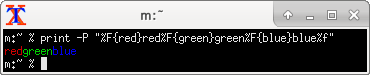

■
今日は今月の何週目? 別解 #シェル芸
date +%Uを使う例は単純でいいが、dateの呼び出しは1回にできないだろうか?
基本的には日付を7で割った商を使えばいいわけで、
あとは曜日があればできそう。というわけで考えてみた。
% date +'(%d + (%w+36-%d)%7 + 6)/7' | bc
3
基本はこの形。
% printf "%2d " {1..31} | fold -21;echo
1 2 3 4 5 6 7
8 9 10 11 12 13 14
15 16 17 18 19 20 21
22 23 24 25 26 27 28
29 30 31
この場合は(日付+6)/7でok。
ということは1日がどれだけずれるかがわかればいいわけで、
今日の曜日がわかれば計算可能。
それが(%w+36-%d)%7の部分。
exprでもいいが、全部空白で区切らないといけないのでちょっと面倒。
% expr $(date +'( %d + ( %w + 36 - %d ) % 7 + 6 ) / 7')
3
なんで1個にしたったかというと、
-dで指定するのに2ヶ所になるのがいやだったというだけの話。
% expr $(date -d8/2 +'( %d + ( %w + 36 - %d ) % 7 + 6 ) / 7')
2
% expr $(date -d8/31 +'( %d + ( %w + 36 - %d ) % 7 + 6 ) / 7')
6
■
無駄な計算を省く高速化
先日のテンプレートマッチングだけど、実は結構時間がかかっている。
% time gawk -f tmp_matching.awk org_gray.txt tmp_gray.txt
(X, Y) = (9, 10): SSD = 768600, SAD = 20510
(X, Y) = (10, 9): SSD = 492037, SAD = 17473
(X, Y) = (10, 10): SSD = 0, SAD = 0
(X, Y) = (10, 11): SSD = 493843, SAD = 17611
(X, Y) = (11, 10): SSD = 769118, SAD = 20606
gawk -f tmp_matching.awk org_gray.txt tmp_gray.txt 35.20s user 0.02s system 99% cpu 35.239 total
この高速化を考える。
# 参照画像のループ
for (x = 1; x <= org_width - tmp_width; x++) {
for (y = 1; y <= org_height - tmp_height; y++) {
ssd = 0; # 初期化
sad = 0; # 初期化
# テンプレート画像のループ
for (i = 1; i <= tmp_width; i++) {
for (j = 1; j <= tmp_height; j++) {
# SSD
ssd += (org_pxls[x + i, y + j] - tmp_pxls[i, j]) ^ 2;
# SAD
sad += abs(org_pxls[x + i, y + j] - tmp_pxls[i, j]);
}
}
# 閾値以下なら表示
if (ssd <= threshold) {
printf("(X, Y) = (%d, %d): SSD = %d, SAD = %d\n",
x, y, ssd, sad);
}
}
}
}
注目すべきはこの部分。
# 閾値以下なら表示
if (ssd <= threshold) {
printf("(X, Y) = (%d, %d): SSD = %d, SAD = %d\n",
x, y, ssd, sad);
}
ssdはその前のループの中で足し込んでいるが、その時点で閾値を超えていたらもう計算する必要はない。
つまりループを抜けてしまえばいいわけだ。
# テンプレート画像のループ
for (i = 1; i <= tmp_width; i++) {
for (j = 1; j <= tmp_height; j++) {
if (ssd > threshold) break;
本当はこの外側のループも抜けたいところだけど、awkにはgotoもないしちょっと複雑になるので省略。
% time gawk -f tmp_matching.awk org_gray.txt tmp_gray.txt
(X, Y) = (9, 10): SSD = 768600, SAD = 20510
(X, Y) = (10, 9): SSD = 492037, SAD = 17473
(X, Y) = (10, 10): SSD = 0, SAD = 0
(X, Y) = (10, 11): SSD = 493843, SAD = 17611
(X, Y) = (11, 10): SSD = 769118, SAD = 20606
gawk -f tmp_matching.awk org_gray.txt tmp_gray.txt 3.18s user 0.00s system 99% cpu 3.186 total
1行追加しただけで10倍速くなった。
■
debianとBSDのcal
stdoutがttyとか見てないのかと思っていたら違っていた。
ttyのときは本日はエスケープシーケンスで反転、
そうじゃないときはBS+_で下線になっていた。
つまり
@emasakaさんの例
cal | tail -n +3 | sed -n $'/\b/='
は$'\b'を使わなくても
% cal | awk '/_/{print NR-2}'
と書けるわけだ。
それにしても普通じゃない仕様だな。
一方RedHat系はutil-linuxのcalが採用されていて、
ttyなら反転、そうじゃなければなにもつかないという、
極普通の仕様になっている。
debian系もutil-linuxはインストールされるが、
なぜかcalはbsdmainutilsのものが採用されている。
二値画像の白黒を01に置き換えるならPBMに変換してしまうのが簡単。
これをPBM(P1)に変換するとこうなる。
% convert shika.png -compress none pbm:
P1
28 28
0 0 0 0 0 0 0 0 0 0 0 0 0 1 1 1 0 0 0 0 0 0 0 0 0 0 0 0 0 0 0 0 0 0 0 0 0 0 0
0 0 1 1 1 0 0 0 0 0 0 0 0 0 0 0 0 0 0 0 1 1 1 1 1 1 1 1 1 1 1 1 1 1 1 1 1 1 1
1 1 1 1 1 0 0 0 0 1 1 1 1 1 1 1 1 1 1 1 1 1 1 1 1 1 1 1 1 1 1 1 1 0 0 0 0 1 1
0 0 0 0 0 1 1 0 0 0 0 0 1 1 0 0 0 0 0 0 0 0 0 0 0 0 1 1 0 0 0 0 0 1 1 0 0 0 0
0 1 1 0 0 0 0 0 0 0 0 0 0 0 0 1 1 0 0 0 0 0 1 1 0 0 0 0 0 1 1 0 0 0 0 0 0 0 0
0 0 0 0 1 1 1 1 1 1 1 1 1 1 1 1 1 1 1 1 1 1 1 1 1 1 1 0 0 0 0 0 1 1 1 1 1 1 1
1 1 1 1 1 1 1 1 1 1 1 1 1 1 1 1 0 0 0 0 0 1 1 0 0 0 0 0 1 1 0 0 0 0 0 1 1 0 0
0 0 0 1 1 0 0 0 0 0 1 1 0 0 0 0 0 1 1 0 0 0 0 0 1 1 0 0 0 0 0 1 1 0 0 0 0 0 1
1 0 0 0 0 0 1 1 0 0 0 0 0 1 1 0 0 0 0 0 1 1 0 0 0 0 0 1 1 0 0 0 0 0 1 1 0 0 0
0 0 1 1 0 0 0 0 0 1 1 0 0 0 0 0 1 1 1 1 1 1 1 1 1 1 1 1 1 1 1 1 1 1 1 1 1 1 1
0 0 0 0 0 1 1 1 1 1 1 1 1 1 1 1 1 1 1 1 1 1 1 1 1 1 1 1 0 0 0 0 0 1 1 0 0 0 0
0 0 0 0 0 0 0 0 0 0 0 0 0 0 0 0 0 0 0 0 0 0 1 1 0 0 0 1 1 0 0 0 0 0 0 0 1 1 0
0 0 0 0 0 0 0 0 0 0 0 1 1 0 0 0 1 1 0 0 0 0 0 0 0 1 1 0 0 0 0 0 1 1 0 0 0 0 0
1 0 0 0 0 1 1 1 1 1 1 1 0 0 1 1 0 0 1 1 1 1 1 1 0 0 0 1 1 0 0 0 0 1 1 1 1 1 1
1 0 0 1 1 1 1 1 1 1 1 1 0 0 0 0 1 1 0 0 0 0 1 1 0 0 0 0 0 0 0 1 1 1 1 1 0 0 0
0 0 0 0 0 1 1 0 0 0 0 1 1 0 0 0 0 0 0 0 1 1 0 0 0 0 0 0 0 0 0 0 0 1 1 0 0 0 0
1 1 0 0 0 0 0 0 0 1 1 0 0 0 0 0 0 0 1 0 0 1 1 1 0 0 0 0 1 1 0 0 1 1 1 0 0 1 1
0 0 0 0 0 0 0 1 1 0 1 1 0 1 1 1 1 1 1 1 1 1 1 1 0 0 1 1 0 0 0 0 0 0 0 1 1 1 1
1 0 0 1 1 1 1 1 1 1 1 1 1 0 0 1 1 1 1 1 1 1 1 1 1 0 0 0 1 0 0 1 1 1 1 0 0 0 0
0 0 0 0 0 1 1 1 1 1 1 1 1 1 0 0 0 0 0 0 0 0 0 0 0 0 0 0 0 0 0 0 0 0 0 0 0 0 0
0 0 0 0
ちょっと体裁を整えてあげると「鹿」が見えてくる。
% convert shika.png -compress none pbm: | sed '1,2d' | xargs -n28
0 0 0 0 0 0 0 0 0 0 0 0 0 1 1 1 0 0 0 0 0 0 0 0 0 0 0 0
0 0 0 0 0 0 0 0 0 0 0 0 0 1 1 1 0 0 0 0 0 0 0 0 0 0 0 0
0 0 0 1 1 1 1 1 1 1 1 1 1 1 1 1 1 1 1 1 1 1 1 1 1 1 1 0
0 0 0 1 1 1 1 1 1 1 1 1 1 1 1 1 1 1 1 1 1 1 1 1 1 1 1 0
0 0 0 1 1 0 0 0 0 0 1 1 0 0 0 0 0 1 1 0 0 0 0 0 0 0 0 0
0 0 0 1 1 0 0 0 0 0 1 1 0 0 0 0 0 1 1 0 0 0 0 0 0 0 0 0
0 0 0 1 1 0 0 0 0 0 1 1 0 0 0 0 0 1 1 0 0 0 0 0 0 0 0 0
0 0 0 1 1 1 1 1 1 1 1 1 1 1 1 1 1 1 1 1 1 1 1 1 1 1 0 0
0 0 0 1 1 1 1 1 1 1 1 1 1 1 1 1 1 1 1 1 1 1 1 1 1 1 0 0
0 0 0 1 1 0 0 0 0 0 1 1 0 0 0 0 0 1 1 0 0 0 0 0 1 1 0 0
0 0 0 1 1 0 0 0 0 0 1 1 0 0 0 0 0 1 1 0 0 0 0 0 1 1 0 0
0 0 0 1 1 0 0 0 0 0 1 1 0 0 0 0 0 1 1 0 0 0 0 0 1 1 0 0
0 0 0 1 1 0 0 0 0 0 1 1 0 0 0 0 0 1 1 0 0 0 0 0 1 1 0 0
0 0 0 1 1 1 1 1 1 1 1 1 1 1 1 1 1 1 1 1 1 1 1 1 1 1 0 0
0 0 0 1 1 1 1 1 1 1 1 1 1 1 1 1 1 1 1 1 1 1 1 1 1 1 0 0
0 0 0 1 1 0 0 0 0 0 0 0 0 0 0 0 0 0 0 0 0 0 0 0 0 0 0 0
0 0 0 1 1 0 0 0 1 1 0 0 0 0 0 0 0 1 1 0 0 0 0 0 0 0 0 0
0 0 0 1 1 0 0 0 1 1 0 0 0 0 0 0 0 1 1 0 0 0 0 0 1 1 0 0
0 0 0 1 0 0 0 0 1 1 1 1 1 1 1 0 0 1 1 0 0 1 1 1 1 1 1 0
0 0 1 1 0 0 0 0 1 1 1 1 1 1 1 0 0 1 1 1 1 1 1 1 1 1 0 0
0 0 1 1 0 0 0 0 1 1 0 0 0 0 0 0 0 1 1 1 1 1 0 0 0 0 0 0
0 0 1 1 0 0 0 0 1 1 0 0 0 0 0 0 0 1 1 0 0 0 0 0 0 0 0 0
0 0 1 1 0 0 0 0 1 1 0 0 0 0 0 0 0 1 1 0 0 0 0 0 0 0 1 0
0 1 1 1 0 0 0 0 1 1 0 0 1 1 1 0 0 1 1 0 0 0 0 0 0 0 1 1
0 1 1 0 1 1 1 1 1 1 1 1 1 1 1 0 0 1 1 0 0 0 0 0 0 0 1 1
1 1 1 0 0 1 1 1 1 1 1 1 1 1 1 0 0 1 1 1 1 1 1 1 1 1 1 0
0 0 1 0 0 1 1 1 1 0 0 0 0 0 0 0 0 0 1 1 1 1 1 1 1 1 1 0
0 0 0 0 0 0 0 0 0 0 0 0 0 0 0 0 0 0 0 0 0 0 0 0 0 0 0 0
あとは空白を削除すればok。
% convert shika.png -compress none pbm: | sed '1,2d' | xargs -n28 | tr -d ' '
0000000000000111000000000000
0000000000000111000000000000
0001111111111111111111111110
0001111111111111111111111110
0001100000110000011000000000
0001100000110000011000000000
0001100000110000011000000000
0001111111111111111111111100
0001111111111111111111111100
0001100000110000011000001100
0001100000110000011000001100
0001100000110000011000001100
0001100000110000011000001100
0001111111111111111111111100
0001111111111111111111111100
0001100000000000000000000000
0001100011000000011000000000
0001100011000000011000001100
0001000011111110011001111110
0011000011111110011111111100
0011000011000000011111000000
0011000011000000011000000000
0011000011000000011000000010
0111000011001110011000000011
0110111111111110011000000011
1110011111111110011111111110
0010011110000000001111111110
0000000000000000000000000000
■
BSを消す
calの出力に含まれるBSを消してきれいにする。
sedでもできるが、実は昔から専用のコマンドも存在する。
colとcolcrtだ。
% cal | grep _ | od -c
0000000 9 1 0 1 1 1 2 1 3 1
0000020 4 _ \b 1 _ \b 5 \n
0000033
% cal | grep _ | col -bx | od -c
0000000 9 1 0 1 1 1 2 1 3 1
0000020 4 1 5 \n
0000025
% cal | grep _ | colcrt - | od -c
0000000 9 1 0 1 1 1 2 1 3 1
0000020 4 1 5 \n
0000027
微妙に仕様が違う。
colは-xをつけないとTABを使いたがるし、行末の無駄な空白も削除してしまう。
% cal | col -b | cat -A
August 2015$
Su Mo Tu We Th Fr Sa$
^I^I 1$
2 3 4 5 6^I7 8$
9 10 11 12 13 14 15$
16 17 18 19 20 21 22$
23 24 25 26 27 28 29$
30 31$
% cal | col -bx | cat -A
August 2015$
Su Mo Tu We Th Fr Sa$
1$
2 3 4 5 6 7 8$
9 10 11 12 13 14 15$
16 17 18 19 20 21 22$
23 24 25 26 27 28 29$
30 31$
一方colcrtは-をつければ_+BSを消すし、ないと2行で表現してくれる。
% cal | colcrt
August 2015
Su Mo Tu We Th Fr Sa
1
2 3 4 5 6 7 8
9 10 11 12 13 14 15
--
16 17 18 19 20 21 22
23 24 25 26 27 28 29
30 31
これはこれでなかなか。
■
鹿マトリックス
先日の鹿はconvertの-scale 1000%で10倍に拡大してみたが、
やっぱ1画素ごとに区切って表示したい。
convertの-crop 1x1で28x28分割してから10倍に拡大、
montageでタイル状に並べればそれらしく見えるようだ。
% convert shika.png -crop 1x1 -scale 1000% miff:- | \
montage - -tile 28x -background whitesmoke -geometry +1+1 shika-matrix.png
区切りはwhitesmokeにしてみた。

なかなかいい感じ。
■
色をコードじゃなく名前で
Show numerical values for each of the 256 colors in ZSH
を見てて%Fなんてあるんだと知った。-Pなので実際はprompt escapesの機能。
%F (%f)
Start (stop) using a different foreground colour, if supported by the terminal. The colour may be
specified two ways: either as a numeric argument, as normal, or by a sequence in braces following the
%F, for example %F{red}. In the latter case the values allowed are as described for the fg zle_high‐
light attribute; see Character Highlighting in zshzle(1). This means that numeric colours are allowed
in the second format also.
%F{red}のような使い方が可能。

■
「Outlook 内に保存されている電子メール アドレス情報がプログラムによってアクセスされようとしています。」
Excahngeサーバから予定表の情報をタスクスケジューラで定期的に取得させていると、
Outlook 内に保存されている電子メール アドレス情報がプログラムによってアクセスされようとしています。これが予期しない動作である場合は [拒否] をクリックして、ウイルス対策ソフトウェアが最新の状態であることを確認してください。
というメッセージが表示されてうっとうしいことなってしまった。
放っておくと出なくなったりするが、なんだか気持ち悪いので調べてみた。
ぐぐってみると「Outlook内に」と打ったところで補完完了して次のページにたどりついた。
電子メール アドレスの情報にアクセスしようとしているか、自分の代わりに電子メールを送信しようとしているプログラムに関する警告が表示される
つまりウイルス対策ソフトウェアの更新が滞っていると出るわけか。
確かに強制的に更新したらメッセージが出なくなった。
でも毎週金曜日に自動で更新されてるはずなんだけどなあ。
■
また「このタスクは管理者特権で作成されます。」になってしまった
前回と同じようにポリシーを変更して再起動したら直ったが、少々面倒なことに。
すべてのアプリケーションが管理者特権で動いていたらしく、
Firefox, Thunderbirdもプロファイルにアクセスできなくなって、
まっさらな状態に近い。
あちこちAdmninistrator所有のファイルだらけになっていた。
しかたないので%HOMEPATH%から下全部をtakeownで再帰的に自分のものに変更した。
しかし、これでもまだだめでなんでかなとCygwinから見てみたら070とか、
首をひねるようなパーミッションのファイルがあった。
こっちはもう調べるのも面倒なのでCygwinを管理者特権で動かしてchmod -R +rwした。
これでFirefoxは生き返った。
生き返ったと言っても面倒な作業が残っていたが。
なんか拡張が全部無効になっていて1個1個別に有効にしますか的な画面が出てきて、
ぽちぽち何十個もクリックするはめに。
まあ、これで元に戻ったのでよかった。
それよりもThunderbirdのほうは拡張が全滅のまま。
とりあえず管理者特権で動かしてお茶を濁していたが、何の解決にもなってない。
■
Thunderbirdを復活させる
なにがいけないのか他で使ってるThunderbirdのプロファイルを見てみると、
extensions.iniの[ExtensionDirs]に拡張が置いてある場所が登録されているということがわかった。
確かに壊れたほうのプロファイルは空になっていた。
そこで適当にこのPATHを作ってやればいいだろうと
% ls -d $PWD/extensions/*.xpi $PWD/extensions/*(/) | xargs cygpath -w
こんな感じでリストを作ってextensions.iniに登録してみた。
でも相変わらず全滅のままだったが、ふとアドオンの拡張を見てみたら無効になっていた。
おお、そういうことか。ここで全部有効にしたら復活した。
これでThunderbirdも元に戻った。ついでに38に上げた。これも自動にしとこう。